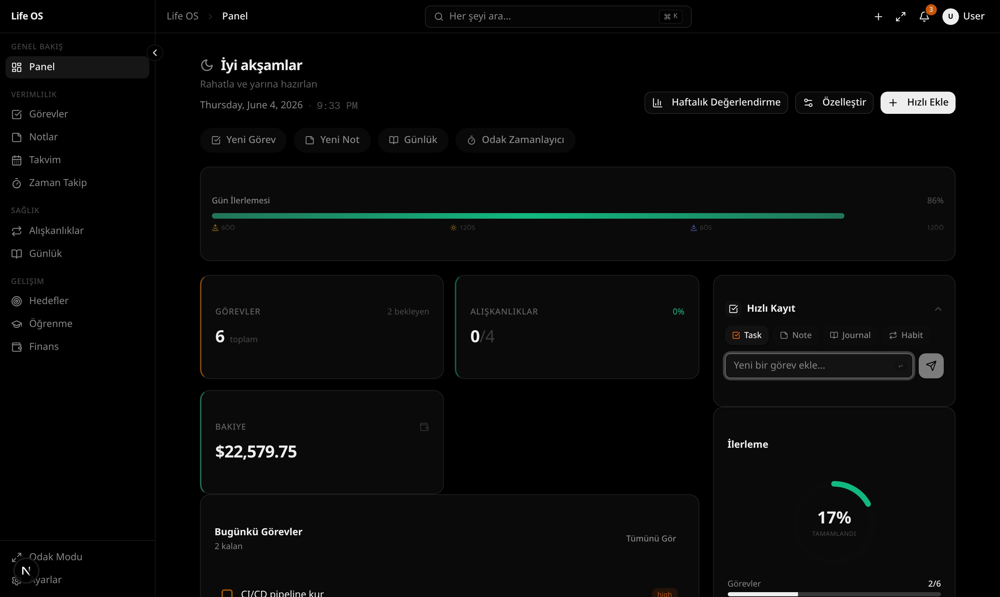
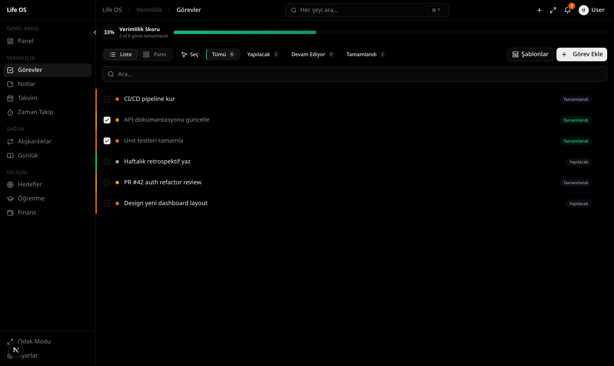
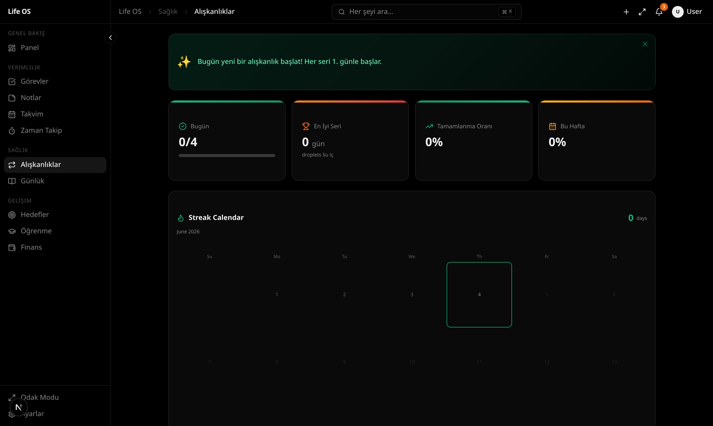
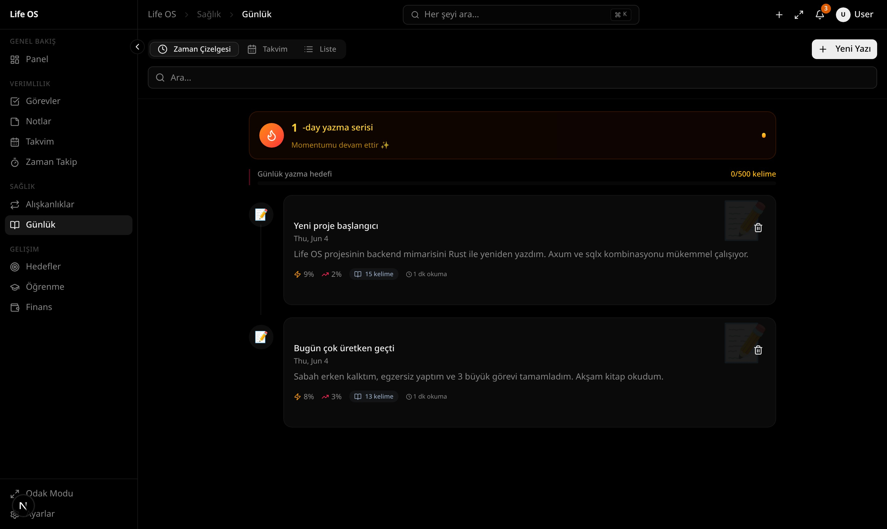
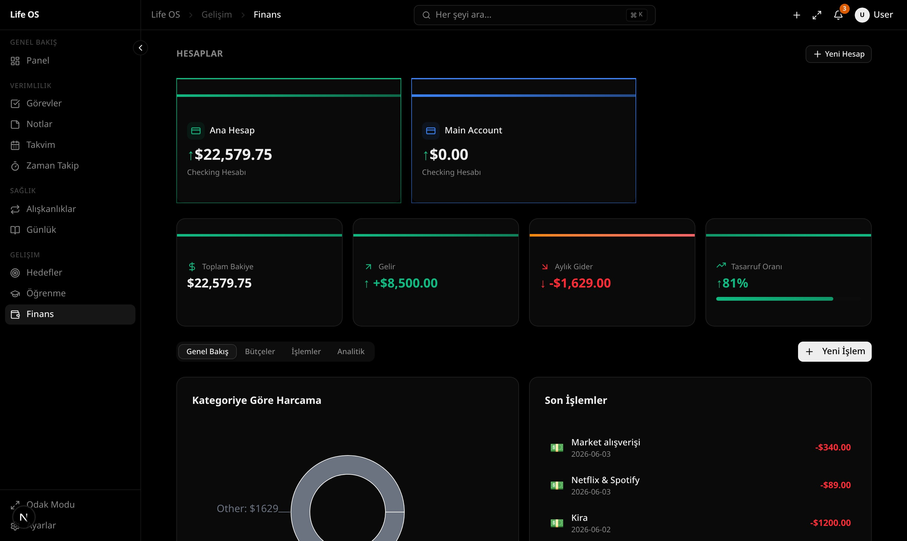

Teknoloji Yığını
Modern araçlarla üretildi
Baştan sona tip güvenli, performanslı ve geliştirici dostu.
 Next.js 16
Next.js 16 React 19
React 19 TypeScript 5
TypeScript 5 Tailwind CSS 4
Tailwind CSS 4 Rust / axum
Rust / axum SQLite
SQLite Prisma ORM
Prisma ORM TanStack Query
TanStack Query Framer Motion
Framer Motion Docker
Docker Bun Runtime
Bun Runtime shadcn/ui
shadcn/uiVerileri üzerinde tam kontrol isteyenler için tasarlanmış, 11 güçlü modüle sahip güzel bir hayat yönetim sistemi.





Rust arkayüzü ve yerel SQLite veritabanı tarafından desteklenen, birlikte çalışan derinlemesine entegre modüller.
Life OS'un diğer hayat yönetim araçlarından nasıl ayrıldığını görün.
Life OS hakkında en çok sorulan sorular ve cevapları.
Baştan sona tip güvenli, performanslı ve geliştirici dostu.
Next.js 16React 19TypeScript 5Tailwind CSS 4Rust / axumSQLitePrisma ORMTanStack QueryFramer MotionDockerBun Runtimeshadcn/uiHesap yok, bulut yok, izleme yok. Sadece klonlayın, çalıştırın ve verilerinizin sahibi olun.
SQLite'ın adlandırılmış bir birime kalıcı olarak kaydedildiği çok aşamalı yapı. Şema ilk başlatmada otomatik olarak uygulanır.
Sonsuza kadar ücretsiz. Abonelik yok. Bulut yok. İzleme yok. Sadece siz ve verileriniz.